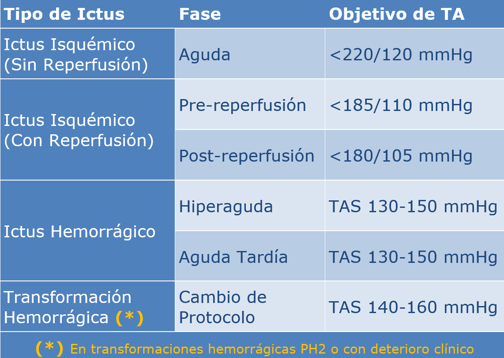

Manejo de la tensión arterial en la fase aguda del ictus: enfoque dinámico
El control de la tensión arterial (TA) en el ictus agudo es un acto de equilibrio crítico que se adapta de forma dinámica al tipo de ictus, al tiempo de evolución y a la terapia de recanalización administrada. El objetivo principal es maximizar la supervivencia del tejido cerebral en riesgo, minimizando al mismo tiempo las complicaciones.

Ictus isquémico
-
Sin terapia de reperfusión: No tratar la TA salvo si supera 220/120 mmHg, permitiendo la hipertensión permisiva para mantener la perfusión del área de penumbra.
-
Si se trata: El objetivo es una reducción gradual y cuidadosa de aproximadamente el 15 % en las primeras 24 horas.
-
Con terapia de reperfusión: Es obligatorio reducir la TA por debajo de 185/110 mmHg antes de iniciar el tratamiento y mantenerla < 180/105 mmHg durante las primeras 24 horas.
-
¡Alerta de Seguridad Post-Trombectomía!: En pacientes con recanalización exitosa de gran vaso (mTICI 2b-3), el descenso intensivo de la TA sistólica a <140 mmHg en las primeras 72 horas es perjudicial y no se recomienda.
Ictus hemorrágico
-
Fase hiperaguda (primeras 6 horas): El tratamiento debe iniciarse lo antes posible, idealmente en las primeras 2 horas desde el inicio de los síntomas. En pacientes con gravedad leve a moderada y TAS 150-220 mmHg, el objetivo es reducir la TA sistólica a 140 mmHg (rango seguro 130-150 mmHg).
-
¡Alerta de Seguridad!: La reducción aguda de la TAS a < 130 mmHg es potencialmente dañina y debe evitarse. Asimismo, se deben evitar descensos bruscos mayores de 70 a 90 mmHg desde el valor basal.
-
Fase aguda tardía (hasta 7 días): Tratar de mantener la TAS < 140 mmHg, asegurando un control continuo y minimizando la variabilidad en las fluctuaciones de presión. Transición cuidadosa de medicación IV a oral.
Transformación hemorrágica de un ictus isquémico
-
Antes de la transformación: Hipertensión permisiva (o control estricto <180/105 si recibió reperfusión) para mantener la perfusión cerebral.
-
Tras la transformación:
-
HI1–HI2–PH1 (asintomático): seguir protocolo isquémico.
-
PH2 o con deterioro clínico: Detener terapias antitrombóticas y disminuir de forma inmediata la TA sistólica a un rango de 140-160 mmHg para prevenir la expansión del hematoma, utilizando agentes intravenosos titulables.
-
Consideraciones finales
En cualquier escenario de fase aguda, la monitorización de la TA debe ser continua y estricta, evitando siempre los picos y las grandes fluctuaciones (variabilidad tensional). Tras las primeras 24–72 h, una vez estabilizado el paciente, el objetivo pasa a la prevención secundaria con un control crónico estricto de la hipertensión (objetivo a largo plazo: 120-130/80 mmHg).
Volver al índice